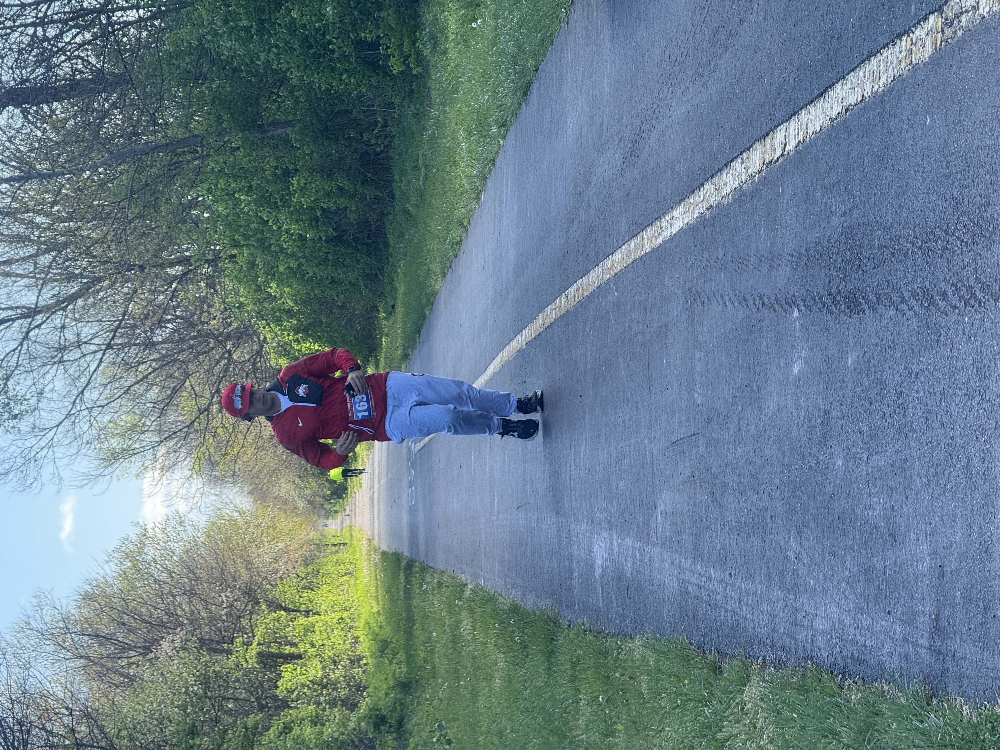
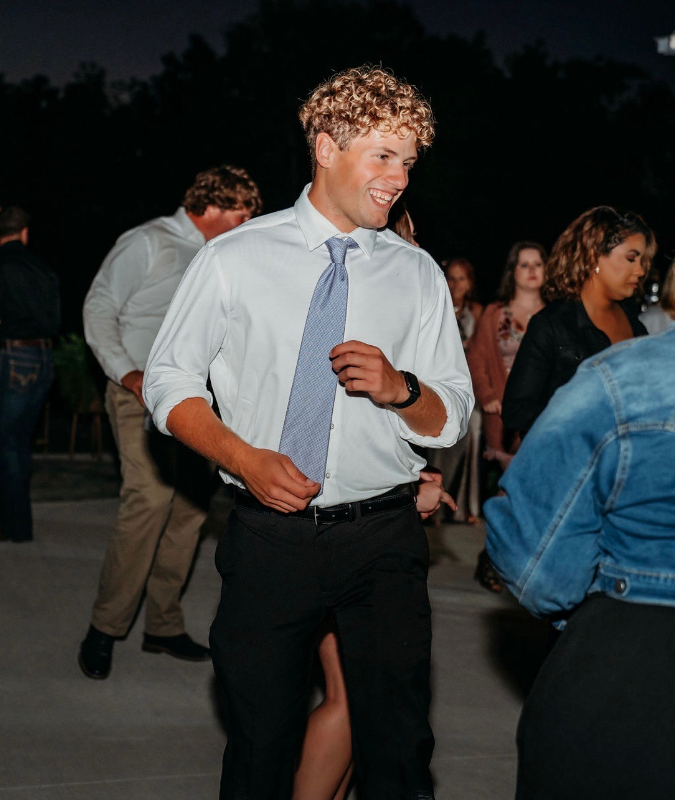
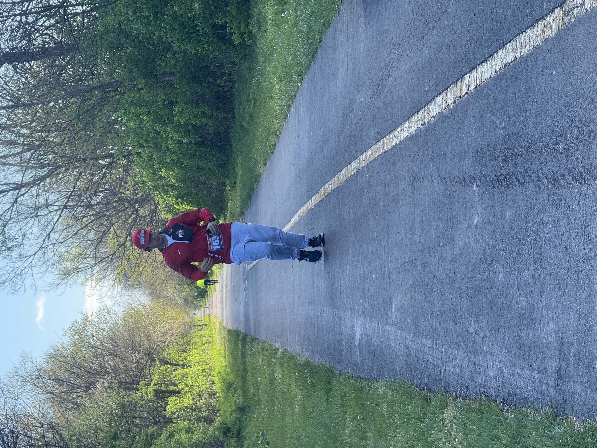
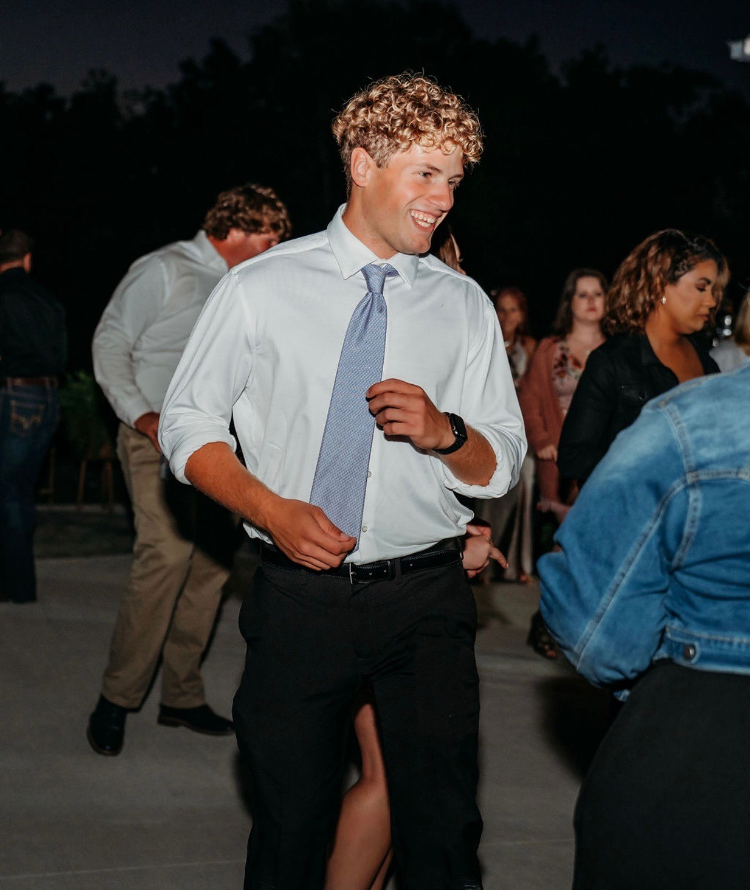

Fulton2455
Connor Fulton is a second year computer science and engineering student at The Ohio State University. He enjoys spending his freetime chasing his fitness goals, playing sports, and video games. Throughout high school, Connor devoted much of his free time to his schoolwork and the London High School football program. High school football brought Connor his first large personal goal of becoming an All-Ohio offensive lineman, which he would accomplish his senior year being named to the 2nd team all division three offensive line. Immediately following his senior season, Connor began to focus his time on weight loss, as being a lineman meant carrying extra weight around. However, shortly into that journey, Connor found that chasing a certain look was not fulfilling and no number on the scale would make him feel accomplished in his goal.
So, Connor began training for a goal he had in mind for roughly a year prior to this point, to run a marathon. Just five months after his senior football season, Connor had lost 70 pounds and was at the start line of the London Marathon in London, Ohio. When he crossed that finish line on that day, he, like many other runners before him, vowed he would never do it again. But, when the dust settled, he began to realize that running that race brought him a major amount of confidence in his individual ability to achieve in any venture he set fourth on. Connor has since participated in the Columbus Marathon in Columbus, Ohio and is scheduled to race the 2025 Air Force Marathon in Dayton and the 2025 Columbus Marathon once again. Connor's next running goal is to qualify for the Boston Marathon, he needs to shave over two hours from his time to do so but he is confident that with enough training, he will succeed.
  
 